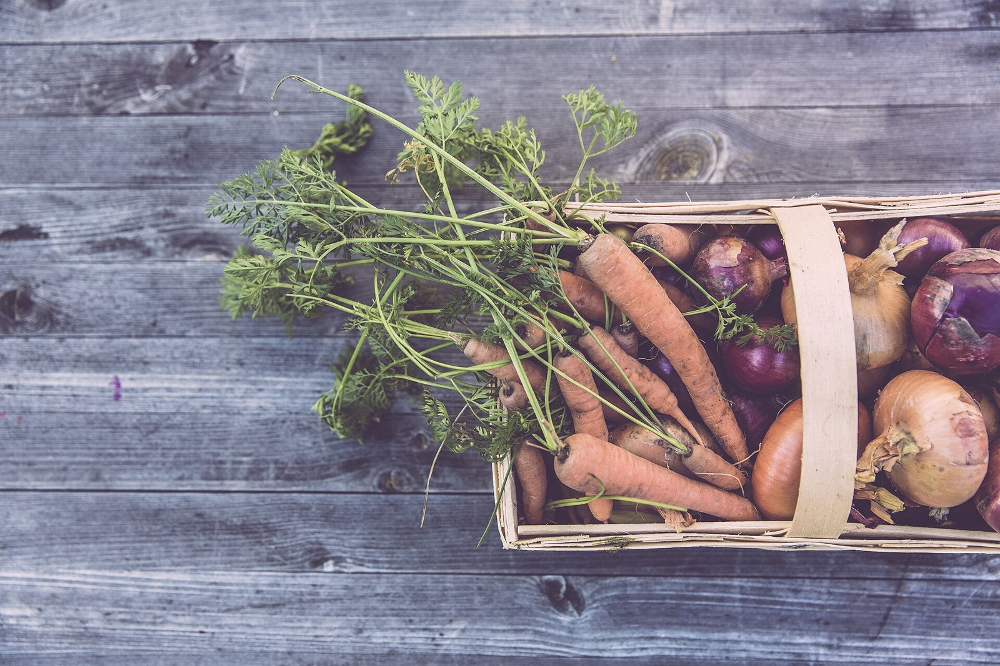
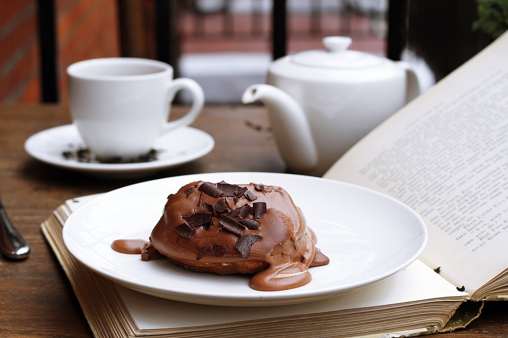

Menu
メニュー

お料理のイメージ写真です。
イメージ(フリー素材)。実際のお料理とは異なります。

食卓のイメージ写真です。
イメージ(フリー素材)。実際のお料理とは異なります。

ひとときのイメージ写真です。
イメージ(フリー素材)。実際のお料理・ドリンクとは異なります。
写真はすべてイメージです。実際のお料理は、Instagramでご覧いただけます。
Menu
イメージ(フリー素材)。実際のお料理とは異なります。

イメージ(フリー素材)。実際のお料理とは異なります。

イメージ(フリー素材)。実際のお料理・ドリンクとは異なります。
写真はすべてイメージです。実際のお料理は、Instagramでご覧いただけます。